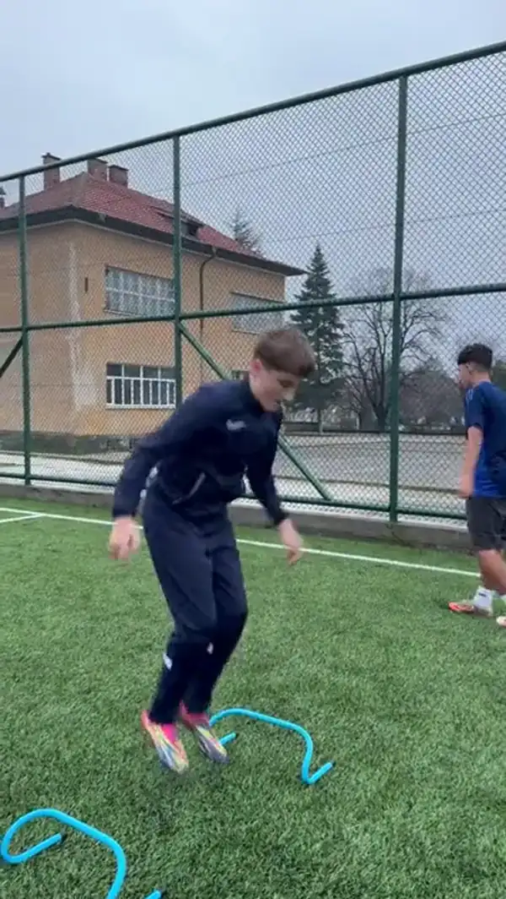
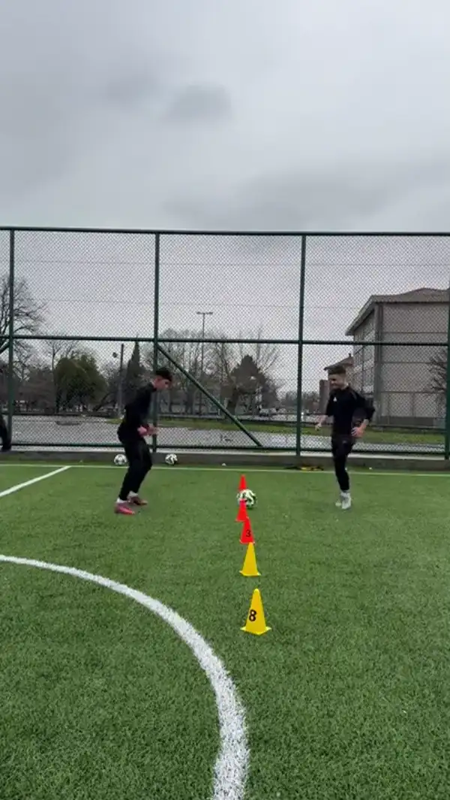
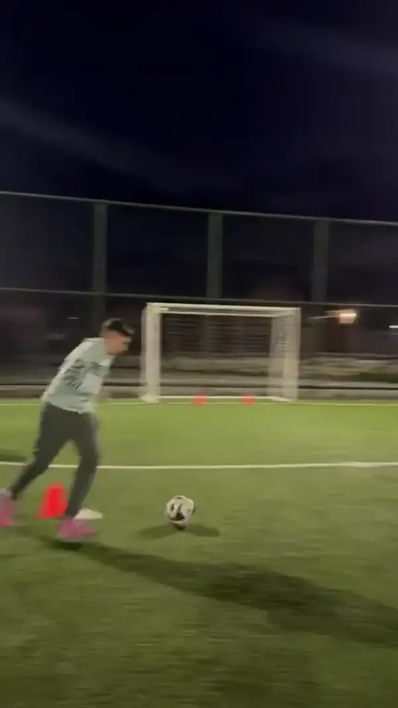

Работа с движениеРАЗВИВАЙ ИГРАТА СИ
ТРЕНИРАЙ СЪС СИСТЕМА.
ИГРАЙ С УВЕРЕНОСТ.
Онлайн програми и индивидуални тренировки, създадени да развиват техниката, бързината и решенията ти в реални игрови ситуации.
Онлайн програми | 1:1 тренировки | За играчи 10–24 г.
ЯСНА ЦЕЛ ВЪВ ВСЯКА ТРЕНИРОВКА
Знаеш какво тренираш, защо го тренираш и как да го приложиш в игра.

Подаване и заставане
Смяна на посокаКонкретна цел. Ясни упражнения. Приложение в игра.
Какво получаваш
Всичко необходимо, за да започнеш да тренираш.
Получаваш готова програма с тренировъчен план, видео демонстрации и ясни инструкции, които можеш да следваш директно от телефона си.
01
Готова PDF програма
Получаваш целия тренировъчен план в удобен PDF формат.
02
Видео демонстрации
Към упражненията имаш видео демонстрации, за да виждаш как се изпълняват.
03
Тренировки по ясен план
Виждаш колко тренировки включва програмата и как да ги разпределиш във времето.
04
Ясни инструкции
Получаваш насоки за изпълнение, повторения и ключови детайли към упражненията.
05
Моментален достъп
След успешна покупка получаваш програмата директно на имейла си.
06
Тренирай отвсякъде
Отвори програмата на телефон или компютър и я използвай директно по време на тренировка.
PDF формат
Видео демонстрации
Моментален достъп
Телефон и компютър
Онлайн програми
Онлайн програми за футболисти
Избери програма според целта си — техника, сила или мачова готовност. Всяка програма е създадена с ясна структура, фокус и конкретна посока за развитие.
Често задавани въпроси за онлайн програмите
Преди да започнеш, ето най-важното.
За каква възраст са онлайн програмите?
Онлайн програмите са създадени за футболисти между 10 и 24 години. Упражненията могат да бъдат адаптирани според възрастта, нивото и индивидуалните цели на играча.
Как получавам програмата след покупка?
След успешно плащане ще получиш автоматичен имейл с линк за достъп до програмата. Можеш да я отвориш веднага от телефон, таблет или компютър.
Какво точно получавам в програмата?
Получаваш структуриран тренировъчен план с конкретни упражнения, серии, повторения и насоки за изпълнение. Всяка програма е създадена с ясна цел - подобряване на техника, скорост, дрибъл, подаване, завършване на атаки или други важни качества за футбола.
Трябва ли ми специално оборудване?
За изпълнението на програмите ще са ти необходими футболна топка, конуси и свободно пространство за тренировка.
За начинаещи или напреднали са програмите?
Програмите са подходящи както за начинаещи, така и за напреднали футболисти. Важното е да избереш програма, която отговаря на целите, върху които искаш да работиш.
Колко време продължава една тренировка?
Продължителността зависи от конкретната програма, но повечето тренировки са между 30 и 60 минути. Целта е сесиите да бъдат достатъчно ефективни, без да пречат на отборните тренировки и възстановяването.
Ще ми помогнат ли програмите ако вече тренирам в клуб?
Да. Програмите са създадени като допълнение към клубните тренировки. Те ти помагат да развиваш конкретни качества, върху които често няма достатъчно време да се работи индивидуално по време на отборните занимания.
Нужно ли е да имам партньор?
Не. Повечето упражнения могат да се изпълняват самостоятелно.
Започни целенасочено
Готов ли си да започнеш програма с ясна структура?
Избери фокус, започни с конкретна програма и тренирай с план, който има цел: по-добра техника, повече увереност и реално приложение в игра.